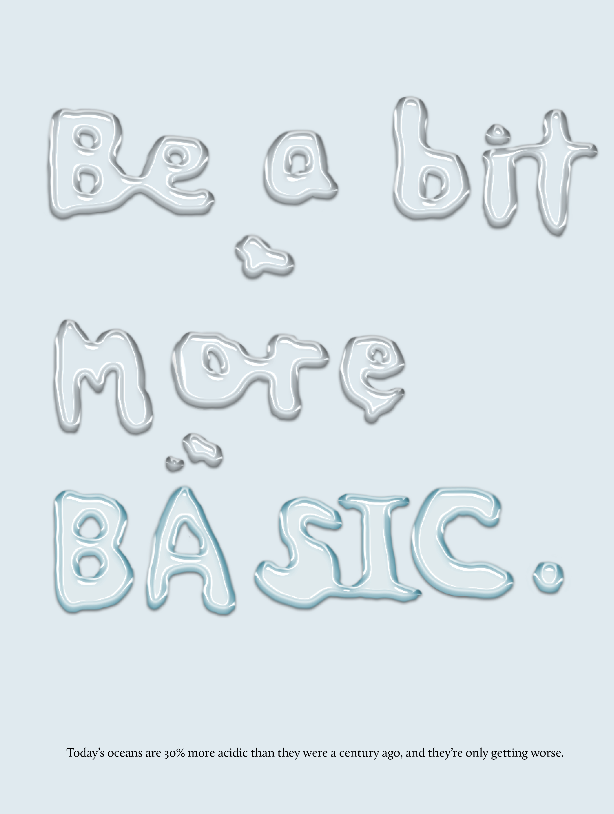

The Spread

How can I design a magazine spread that 1) effectively captures a reader's attention, 2) informs them about a message, which is the issue of ocean acidification, and 3) presents a call to action that encourages the reader to do something about the spread's message?
My first sketch of the magazine spread layout, including my inspiration for the liquid text effect in the image, is shown. I initially wanted to have the image on the first page be a photograph of words written in water on paper, but this proved to be a near impossible task, since every type of paper I tried would absorb the water before I could finish writing out the sentence (even cardstock!). I decided to create the image digitally, and I'll explain the signficance of it in the next section.
I ultimately changed a few more of the original elements, the most noticable of which is the graphic in the first column of text in the article. I originally planned to place a diagram of the chemical reaction that causes ocean acidification, but I later changed it to a graphic of levels of acidification worldwide. The new image is in the shape of the earth, and its round outline offsets the vertical lines of text and creates a visual balance in the spread's composition.
 This original image was created in Adobe Photoshop using a drop shadow, bevel & emboss, and a custom gloss contour that I created in order to give off the effect of the words being written with water.
I'm passionate about environmental conservation and sustainability, and I knew that a magazine spread had the potential for a great call to action to inform people about the issue of ocean acidifcation, a pressing issue of which many just aren't aware. In order to grab the reader's attention to the spread so that they could read about this issue, I chose to create the image in an uncoventional medium; it is unexpected and captures interest. The witty one-liner also piques attention while withholding just enough to leave the reader with questions—What does this mean? How is it related to ocean acidification?—to which they can turn to the article to find answers. It also provided an way for me to bridge the headlining words with a visual representation.
The word "BASIC" is intentially prominent in the image, not only because it is in all upercase letters, but also because it has a slight blue tint. The pH scale at the top of the magazine spread demonstrates the progression of acidic to basic, and the word "BASIC" is shown in a blue color that is closer to the basic end of the pH scale. While making the connection between the color of the word "BASIC" and the shade on the pH scale is certainly a rather wide semantic bridge to gap, because the reader is an adult who is reading a magazine that includes scientific articles such as this one, I felt that the choice was appropriate for the intended audience.
Finally, the small, italic text in the body text's regular typeface, which reads "Today's oceans are 30% more acidic than they were a century ago, and they're only getting worse" juxtaposes the whimsical and unexpected nature of the image by stating a grave statistic, reflecting the gravity and urgency of the topic at hand. It also serves to preview the article's contents.
I wrote the text component of the magazine spread, which you can read in its entirety here.
The audience for this magazine spread is adults, particularly millennial adults, who are generally more likely to be concerned with environmental issues and to (potentially) change their habits to help mitigate the problem. Because the target demographic comprises adults, an informational article is an appropriate for this audience. The text's message? That ocean acidification is a pressing problem that severely affects ocean wildlife and manmade industries that rely on it—but also that there are steps that can be taken to fix the problem.
The headers and titles in the spread are done in the Helvetica Neue typeface, a decidedly modern type that reflects the progressive mind and relatively young age (millennial) of the reader. The body text of the article is styled in Calluna, a serif font that is easy to read in print (the intended medium).
While the image's unconventional medium captures attention and urges readers to "be a bit more basic," a nod to the severity of the acidification of the seas, the text component—the article—explains what ocean acidification is, its current severity, and its consequences on the environment/industries that rely on a healthy environment. After the end of the article, there are several solutions that can be implemented to fix the problem, from large-scale undertakings to personal changes to which the reader can contribute on an individual level. The final text component references articles at which the reader can find more information (you can read them here and here). The citation of reputable sources builds ethos, which is crucial when persuading the reader to see a certain view and to take a certain action regarding a topic that is, for many in the audience for this project, completely new.
Many of the shapes included in the spread are a light blue shade, close to the color of the tint of the word "BASIC" in the graphic. I chose to do this to create a motif with the color, making it an integral component of the spread and thus emphasizing its importance when used in the image. The blue color also alludes to the ocean, tying together the visual elements of the spread and connecting the composition with the subject matter.
The triangle element that extends from the first page to the second is placed specifically to draw the reader's attention from the first page (the tip of the triangle) to the second page, where the triangle's outline crescendoes, keeping the reader's focus. Upon first glance, the main grab for attention is the image on the first page/left side of the spread. The triangle guides the reader's eyes to the title of the article, which contains the call to action, where he/she begins to read.
In order to indicate to readers the end of the article, there is an end mark (a square in the same blue shade as the majority of the design elements) at its conclusion. To its right, at the right end of the second page of the spread, the resources and links are imposed over a colored column; this visual separation makes it clear to the reader that they are, while part of the spread, not part of the article.
In the first column of text, I included this image of the earth with the caption: "Current surface pH of the oceans—the purple regions indicate extreme acidity." This was done to break up the large blocks of text and provide visual stimulation alongside the written information. Additionally, the curved outline of the picture balanced the composition of the spread by contrasting with the majority of the lines in the spread, which were straight and vertical or horizontal.
Despite this, I still feel that there needs to be a bit more visual hierarchy, considering the large amount of text included in the spread. In a redesign of this project, I'd consider employing more editorial help like pull quotes, paragraph delineation, or white space in order to better help the audience to read. Especially with the serious content matter in the article, which may be disheartening to some, I think there needs to be more interest to the composition of the spread so that the reader does not stop reading or flip the magazine's page before the end of the article.
{kind=link}